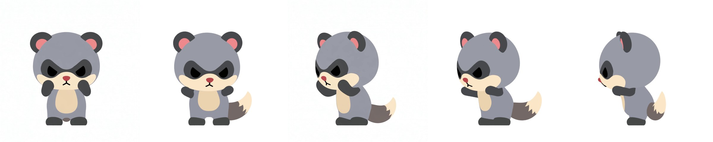
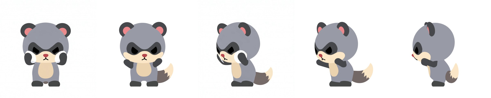
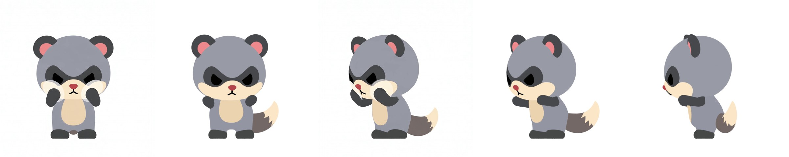
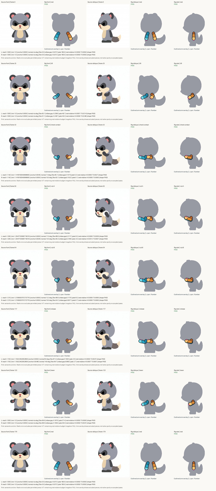
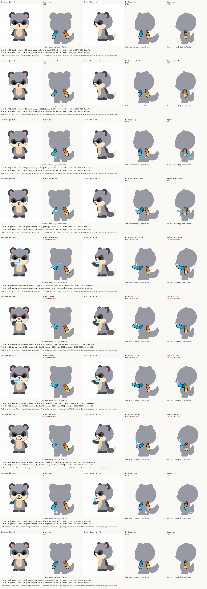

ゴムのように曲がっていた腕を、上腕・前腕・手の3パーツ＋丸い関節キャップの「肘アーム」に作り直しました。動作中だけ上腕と前腕を同じ比率で伸ばせます（1.0〜1.4、形は崩さない）。Blender 上では骨に直接キーを焼き込む方式にし、ドライバーを廃止しました。
各行：元動画 正面 ｜ リグ 正面 ｜ 元動画 斜め ｜ リグ 斜め ｜ リグ 横。伸び率は 当てる 1.14 / こすり A 1.30 / こすり B 1.22。



自己レビュー（正直な評価）: ゲートは全部通るが、見た目は元動画と違う。元動画は肘を下げ前腕を立てて頬の高さ（目の下）に手を当てている。リグは手が顎の下の角にあり、腕が外へ張り出して「構え」に見える。原因は、腕を伸ばせなかった時期（オーナー決定1）に接触位置を顎の下側に下げた設計が残っていること。伸長が使えるようになったので、次は元動画どおり「頬の高さ・肘を下げる」で解き直す（round 6）。
洗顔の全キーと、歯磨き（伸長 1.4 でも頭と干渉して不成立）の診断表。

